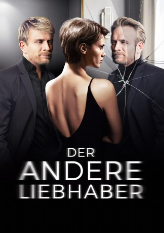

#9004 Der Andere Liebhaber
Alternativ: Double Lover (Englischer Titel)
 
 IMDB-Wertung: 6.2 / 10
IMDB-Wertung: 6.2 / 10  Metascore: 70
Metascore: 70 
Als sich die attraktive Chloé in ihren Psychotherapeuten Paul verliebt, scheinen all ihre Probleme gelöst. Sie zieht mit ihm zusammen, doch schon bald merkt sie, dass er ihr etwas verheimlicht. Durch Zufall entdeckt Chloé, dass Paul einen Zwillingsbruder hat, der ebenfalls Therapeut ist. Von Neugier getrieben begibt sie sich bei ihm in Behandlung und ist geschockt: Obwohl er ihm äußerlich aufs Haar gleicht, ist Louis das völlige Gegenteil seines Bruders – arrogant, zynisch und besitzergreifend. Trotzdem fühlt sich Chloé von ihm angezogen und gerät in ein gefährliches Geflecht aus Begierde und Täuschung.
Jahr: 2017
Dauer: 108 Minuten
FSK: 6
Land: Frankreich Studio: Weltkino FilmverleihTonspuren:
Untertitel:
Auflösung: 1080p (1920x808) Größe: 4485 MB
Genre: Thriller, Drama, Liebe
Regisseur: François Ozon
Drehbuch: François Ozon
Soundtrack: Philippe Rombi
Darsteller:
- Marine Vacth als Chloé
 Jérémie Renier als Paul et Louis
Jérémie Renier als Paul et Louis Jacqueline Bisset als Mme Schenker et la mère de Chloé
Jacqueline Bisset als Mme Schenker et la mère de Chloé- Myriam Boyer als Rose
- Dominique Reymond als La gynécologue et Agnès Wexler
- Fanny Sage als Sandra Schenker
- Jean-Édouard Bodziak als Le jeune psychanalyste
- Antoine de La Morinerie als Psychanalyste 1
- Jean-Paul Muel als Psychanalyste 2
- Keisley Gauthier als Jumeau enfant
- Tchaz Gauthier als Jumeau enfant
- Clemence Trocque als Jumelle au rouge à lèvres
- Pascal Aubert als Policier
- Guillaume Le Pape als Doublure Paul et Louis
- Benoît Giros als Doublure Paul et Louis
Datei: X:\2017(A-F)\Andere Liebhaber, Der (2017, FSK6, 1920x808).mkv seit 18.05.2018
Festplatte: HD 2017(A-Z)-2018(A-F)
 Es gibt insgesamt 152 Filme in der Gruppe '2017(A-F)'
Es gibt insgesamt 152 Filme in der Gruppe '2017(A-F)'